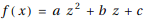
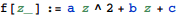
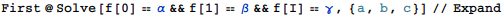
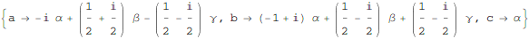
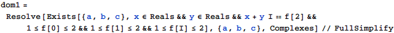
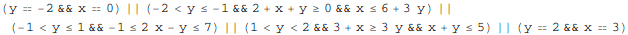
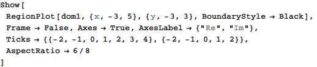
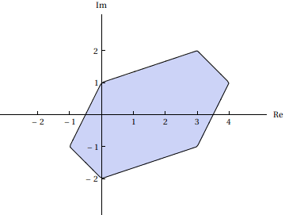

東京大学 2021年 理科 第2問
問題
複素数a,b,cに対して整式を考える。iを虚数単位とする。
(1) α,β,γを複素数とする。f(0)=α,f(1)=β,f(i)=γが成り立つとき、a,b,cをそれぞれα,β,γで表せ。
(2) f(0),f(1),f(i)がいずれも1以上2以下の実数であるとき、f(2)がとりうる範囲を複素平面上に図示せよ。
解答
(1)
与えられた関係式をa,b,cについて解く。



(2)
f(2)=x+i y (x,y∈R)として、xとyが満たす関係式は


これを図示すると下図(塗りつぶし部、境界線含む)。


補足・感想
第1問に続いてMathematica任せで解ける。